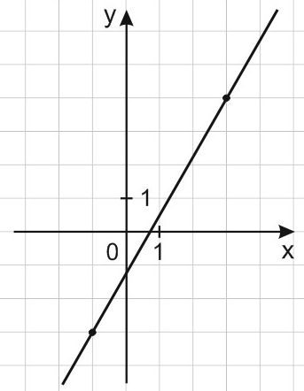
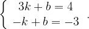
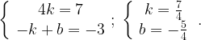
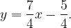
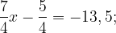

Пример №1
На рисунке изображён график функции f(x)=kx+b. Найдите значение x, при котором f(x)=-13,5.

Решение:
Найдем, чему равны k и b. График функции проходит через точки (3; 4) и (-1; -3). Подставив по очереди координаты этих точек в уравнение прямой y = kx + b, получим систему:

Вычтем из первого уравнения второе:

Уравнение прямой имеет вид:

Найдем, при каком x значение функции равно -13,5.

Ответ: -7.
|
Линейная функция
Необходимая теория
Задания №10 из ЕГЭ: линейная функция
Пример №1
Пример №2
Пример №3
|